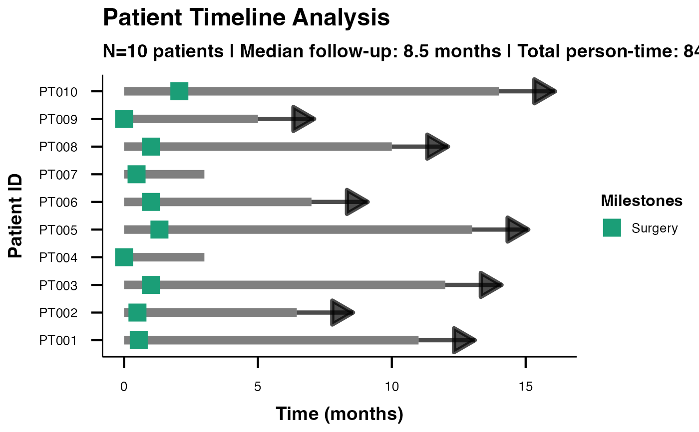

DateTime Swimmer Plot Example Data
Source:R/data_swimmer_unified_docs.R
swimmer_unified_datetime.RdA dataset with actual calendar dates to demonstrate datetime handling capabilities of the swimmer plot function. Shows how to work with real-world date formats in clinical data.
Usage
data(swimmer_unified_datetime)Format
A data frame with 10 rows and 8 variables:
- PatientID
Character. Unique patient identifiers (PT001-PT010)
- StartDate
Character. Treatment start date in YYYY-MM-DD format
- EndDate
Character. Treatment end date in YYYY-MM-DD format
- BestResponse
Character. Best overall response (CR, PR, SD, PD)
- Surgery
Character. Surgery date in YYYY-MM-DD format (NA if no surgery)
- ProgressionAssessment
Character. Date of progression assessment (NA if no progression)
- EventType
Character. Type of clinical event recorded
- Site
Character. Clinical trial site (Center A, B, C)
See also
Other swimmer plot datasets:
swimmer_unified_basic,
swimmer_unified_comprehensive,
swimmer_unified_events,
swimmer_unified_oncology
Examples
data(swimmer_unified_datetime)
# DateTime swimmer plot with relative display
swimmerplot(
data = swimmer_unified_datetime,
patientID = "PatientID",
startTime = "StartDate",
endTime = "EndDate",
responseVar = "BestResponse",
timeType = "datetime",
dateFormat = "ymd",
timeUnit = "months",
timeDisplay = "relative",
milestone1Name = "Surgery",
milestone1Date = "Surgery"
)
#>
#> SWIMMER PLOT
#>
#> character(0)
#>
#> Timeline Summary Statistics
#> ───────────────────────────────────
#> Metric Value
#> ───────────────────────────────────
#> Number of Patients 10.000000
#> Total Observations 10.000000
#> Median Duration 8.500000
#> Mean Duration 8.450000
#> Total Person-Time 84.450000
#> Mean Follow-up 8.450000
#> CR Rate (%) 30.000000
#> PD Rate (%) 20.000000
#> PR Rate (%) 30.000000
#> SD Rate (%) 20.000000
#> ───────────────────────────────────
#>
#>
#> <div style='background-color: #e8f5e8; padding: 15px; border-radius:
#> 5px; margin: 10px 0;'>
#>
#> Clinical Interpretation
#>
#> <div style='margin: 10px 0;'><h5 style='color: #2e7d32;'>Timeline
#> Analysis:
#>
#> Study included 10 patients with 10 timeline observations. Median
#> follow-up was 8.5 months (range: 3.0 to 14.0 months).
#>
#> <div style='margin: 10px 0;'><h5 style='color: #2e7d32;'>Person-Time
#> Analysis:
#>
#> Total person-time: 84.5 months. Average follow-up per patient: 8.4
#> months.
#>
#> <div style='margin: 10px 0;'><h5 style='color: #2e7d32;'>Response
#> Pattern Analysis:
#>
#> Most common response was CR (30.0% of observations). Response
#> distribution shows clinical patterns suitable for efficacy analysis.
#>
#> Person-Time Analysis
#> ──────────────────────────────────────────────────────────────────────────
#> Response Type Patients Total Time Mean Time Incidence Rate
#> ──────────────────────────────────────────────────────────────────────────
#> ──────────────────────────────────────────────────────────────────────────
#>
#>
#> Milestone Event Summary
#> ────────────────────────────────────────────────────
#> Milestone Events Median Time Time Range
#> ────────────────────────────────────────────────────
#> ────────────────────────────────────────────────────
#>
#>
#> Advanced Clinical Metrics
#> ──────────────────────────────────────────────────────
#> Metric Value Unit Clinical Interpretation
#> ──────────────────────────────────────────────────────
#> ──────────────────────────────────────────────────────
#>
